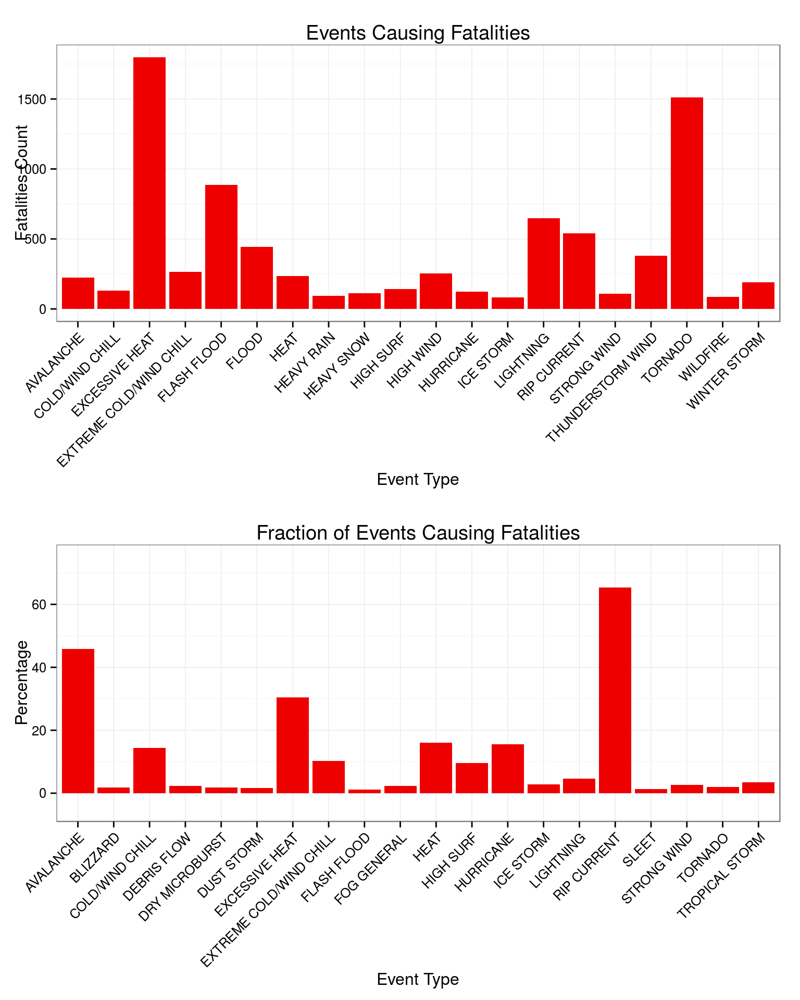
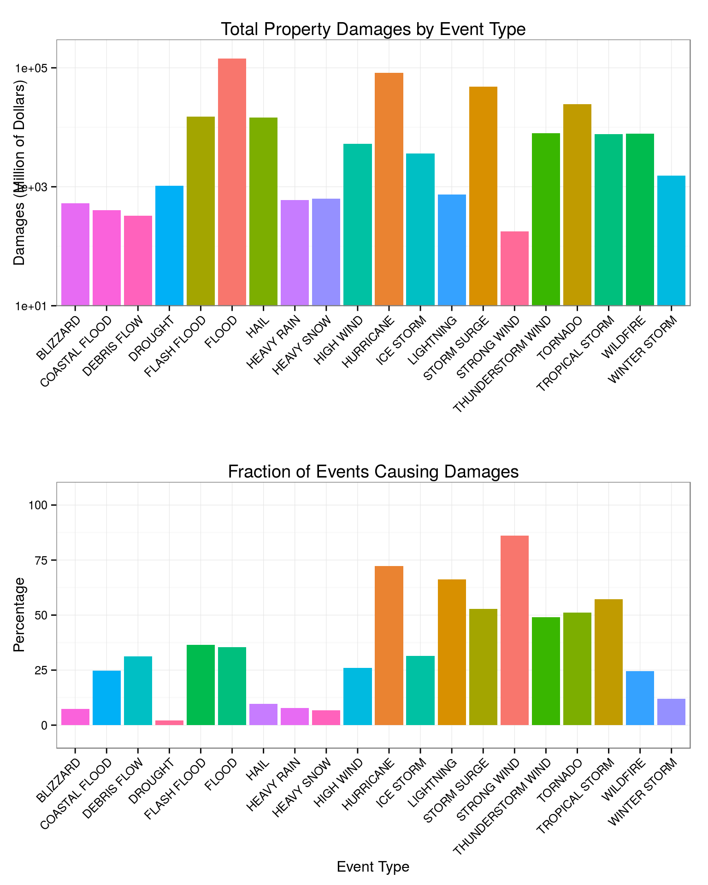

Report for the first assignment of the Reproducible Research course of the Coursera/JHSPH Data Science Specialization.
The source files are posted on GitHub.
This project involves exploring the U.S. National Oceanic and Atmospheric Administration’s (NOAA) storm database. This database records major weather-related events in the United States, tracking their times and locations as well as estimates of fatalities, injuries, property and agricultural damages that may be associated with them.
We seek to identify which type of storm events have the greatest impact on the population both from the point of view of their health and of the economic consequences. To address these questions, our analysis aggregates the data by storm event type to identify the storm events categories responsible for the largest impact as measured by fatalities, injuries, property damage, crop damage.
Looking separately at each harm/damage category separately based on our analysis we can say that the most severe impact comes from the following types of events:
Agricultural Damage: hurricanes and drought, both in terms of total economic cost and fraction of events that cause significant damage.
It is worth noting that in addition to events directly classified as hurricane, among the most impactful event types there are others that are/can be related to hurricanes themselves or other kind of tropical storm activity (e.g. tropical storms, storm surge).
Property Damage: in absolute terms hurricanes and floods dominate the economic impact (and here again one may want to look at a broader “tropical event” category). When we consider the likelihood that a storm causes “recordable” damages, wind and snow emerge at the top. While their cumulative cost may not be as substantial as that of major events like hurricanes, the damage caused by wind and snow can have a serious impact on the life and economic activity of a wider range of families and communities across the country and it warrants attention and adequate preparation.
Human Fatalities/Injuries: tornadoes, floods (including flash floods) and excessive heat emerge as the most serious threats to human health in absolute terms. It is interesting however, to note that in terms of fraction of events with fatalities/injuries, rip currents and avalanches take the top spots (with “likelihood” >= 50% of fatalities and about 25% of injuries on a given event).
This may suggest that people expose themselves to avoidable risks, given that one can think of associating rip currents and avalanches with leisure activities.
The scope and time for this investigation were limited, but there are clear directions worth further investigation, such as
NAEVTYPE RegularizationThe data structure and definition documentation is at the following URLs of the NOAA National Climatic Data Center (NCDC):
The raw data comprise 37 variables with 902,297 observation from years 1950-2011.
The objective of this research is to address two main questions:
The main variables in the NOAA/NCDC Storm Event databases that we will consider are:
For storm event date and type:
For human and economic damages associated with each storm event:
The values reported for these two latter have to be converted in actual US dollar amounts by multiplying them by a scaling factor coded in two other variables (PROPDMGEXP, CROPDMGEXP) as the power of 10 of the multiplier. These two auxiliary variables seem to suffer from some data-entry issues, which we will address below.
The data set comes as a compressed csv file, which can be read directly with read.csv(). After reviewing the data we set our preferred values for the classes of the variables loaded in the data-frame and we set them on loading via the colClasses option, using a character vector read from an auxiliary file.
NOTE: given the substantial size of the data set we set the options cache = TRUE to reduce the knitr processing time to a manageable length.
col.cl <- read.csv("data/readin_classes.csv", stringsAsFactors=FALSE, strip.white=TRUE)
col.cl$newclass2
# [1] "numeric" "character" "character" "factor" "numeric" "character" "factor" "character"
# [9] "numeric" "character" "character" "character" "character" "numeric" "character" "numeric"
# [17] "character" "character" "numeric" "numeric" "factor" "numeric" "numeric" "numeric"
# [25] "numeric" "character" "numeric" "character" "character" "character" "character" "numeric"
# [33] "numeric" "numeric" "numeric" "character" "numeric"data <- read.csv("data/StormData.csv.bz2", colClasses= col.cl$newclass2, nrows=1300000, strip.white=TRUE) This is the structure of the data-frame as loaded.
str(data)
# 'data.frame': 902297 obs. of 37 variables:
# $ STATE__ : num 1 1 1 1 1 1 1 1 1 1 ...
# $ BGN_DATE : chr "4/18/1950 0:00:00" "4/18/1950 0:00:00" "2/20/1951 0:00:00" "6/8/1951 0:00:00" ...
# $ BGN_TIME : chr "0130" "0145" "1600" "0900" ...
# $ TIME_ZONE : Factor w/ 22 levels "ADT","AKS","AST",..: 6 6 6 6 6 6 6 6 6 6 ...
# $ COUNTY : num 97 3 57 89 43 77 9 123 125 57 ...
# $ COUNTYNAME: chr "MOBILE" "BALDWIN" "FAYETTE" "MADISON" ...
# $ STATE : Factor w/ 72 levels "AK","AL","AM",..: 2 2 2 2 2 2 2 2 2 2 ...
# $ EVTYPE : chr "TORNADO" "TORNADO" "TORNADO" "TORNADO" ...
# $ BGN_RANGE : num 0 0 0 0 0 0 0 0 0 0 ...
# $ BGN_AZI : chr "" "" "" "" ...
# $ BGN_LOCATI: chr "" "" "" "" ...
# $ END_DATE : chr "" "" "" "" ...
# $ END_TIME : chr "" "" "" "" ...
# $ COUNTY_END: num 0 0 0 0 0 0 0 0 0 0 ...
# $ COUNTYENDN: chr "" "" "" "" ...
# $ END_RANGE : num 0 0 0 0 0 0 0 0 0 0 ...
# $ END_AZI : chr "" "" "" "" ...
# $ END_LOCATI: chr "" "" "" "" ...
# $ LENGTH : num 14 2 0.1 0 0 1.5 1.5 0 3.3 2.3 ...
# $ WIDTH : num 100 150 123 100 150 177 33 33 100 100 ...
# $ F : Factor w/ 7 levels "","0","1","2",..: 5 4 4 4 4 4 4 3 5 5 ...
# $ MAG : num 0 0 0 0 0 0 0 0 0 0 ...
# $ FATALITIES: num 0 0 0 0 0 0 0 0 1 0 ...
# $ INJURIES : num 15 0 2 2 2 6 1 0 14 0 ...
# $ PROPDMG : num 25 2.5 25 2.5 2.5 2.5 2.5 2.5 25 25 ...
# $ PROPDMGEXP: chr "K" "K" "K" "K" ...
# $ CROPDMG : num 0 0 0 0 0 0 0 0 0 0 ...
# $ CROPDMGEXP: chr "" "" "" "" ...
# $ WFO : chr "" "" "" "" ...
# $ STATEOFFIC: chr "" "" "" "" ...
# $ ZONENAMES : chr "" "" "" "" ...
# $ LATITUDE : num 3040 3042 3340 3458 3412 ...
# $ LONGITUDE : num 8812 8755 8742 8626 8642 ...
# $ LATITUDE_E: num 3051 0 0 0 0 ...
# $ LONGITUDE_: num 8806 0 0 0 0 ...
# $ REMARKS : chr "" "" "" "" ...
# $ REFNUM : num 1 2 3 4 5 6 7 8 9 10 ...Due to the nature of the development of this dataset several variables suffer from inconsistent formatting and in order to make our analysis as robust as possible we cleaned and reformatted some of the potentially useful variables, as well as created ones for further convenience.
data$REMARKS <- gsub("^ *", "", data$REMARKS, perl=TRUE)
data$REMARKS <- gsub(" *$", "", data$REMARKS, perl=TRUE)
data$REMARKS <- gsub("[ ]{2,}", " ", data$REMARKS, perl=TRUE)
data$EVTYPE <- gsub("^ *", "", data$EVTYPE, perl=TRUE)
data$EVTYPE <- gsub(" *$", "", data$EVTYPE, perl=TRUE)
data$EVTYPE <- gsub("[ ]{2,}", " ", data$EVTYPE, perl=TRUE)
data$COUNTYNAME <- toupper(data$COUNTYNAME)
data$EVTYPE <- toupper(data$EVTYPE)
data$PROPDMGEXP <- toupper(data$PROPDMGEXP)
data$CROPDMGEXP <- toupper(data$CROPDMGEXP)data$LATITUDE[data$LATITUDE <= 0] <- NA
data$LONGITUDE[data$LONGITUDE <= 0] <- NAFirst a small fix motivated by the discovery of O instead of a 0 in the BGN_TIME variable:
data$BGN_TIME <- gsub("([0-9])O(.*)([^M])$","\\10\\2\\3", data$BGN_TIME, perl=TRUE)It is better to work with properly constructed time variables, hence we convert BGN_DATE and END_DATE into POSIXlt class variables.
# making BGN and END dates dates
data$BGN_DATE.new <- strptime(as.character(data$BGN_DATE), "%m/%d/%Y %H:%M:%S")
data$END_DATE.new <- strptime(as.character(data$END_DATE), "%m/%d/%Y %H:%M:%S")Finally, we define a new variable YEAR.
# create a 4-digit year variable
data$YEAR <- substr(as.character(data$BGN_DATE.new),0,4)For ease of processing it is practical to work with a reduced set of variables.
Our choice was the following:
sel.columns.n <- c( 37, 7, 5, 40, 38, 39, 8, 23, 24, 25, 26, 27, 28, 36)
colnames(data)[sel.columns.n]
# [1] "REFNUM" "STATE" "COUNTY" "YEAR" "BGN_DATE.new" "END_DATE.new"
# [7] "EVTYPE" "FATALITIES" "INJURIES" "PROPDMG" "PROPDMGEXP" "CROPDMG"
# [13] "CROPDMGEXP" "REMARKS"After creating the new data-frame, we rename the newly created time variables to take the original names, and sort the data-frame chronologically by BGN_DATE.
good <- data[, sel.columns.n]
colnames(good)[5] <- "BGN_DATE"
colnames(good)[6] <- "END_DATE"
# sorting data frame chronologically
good <- good[order(good$BGN_DATE), ]We perform some more cleaning steps on this leaner data-frame to regularize the EVTYPE variable.
Because of historical reasons, namely the heterogenous sources of the data compiled into the Storm Event database, the EVTYPE variable requires a significant amount of work to tidy it up into a more usable form.
While in theory since 1996 NOAA has codified a set of 48 type of events See NWS Directive to be used in the classification of storm events, a quick review of the different EVTYPE values for each year shows that their number remained higher until much more recently.
EVTYPE.by.year <- tapply(good$EVTYPE, good$YEAR, function(x) table(x), simplify=TRUE)
sapply(EVTYPE.by.year, function(x) length(names(x)))
# 1950 1951 1952 1953 1954 1955 1956 1957 1958 1959 1960 1961 1962 1963 1964 1965 1966 1967 1968 1969
# 1 1 1 1 1 3 3 3 3 3 3 3 3 3 3 3 3 3 3 3
# 1970 1971 1972 1973 1974 1975 1976 1977 1978 1979 1980 1981 1982 1983 1984 1985 1986 1987 1988 1989
# 3 3 3 3 3 3 3 3 3 3 3 3 3 3 3 3 3 3 3 3
# 1990 1991 1992 1993 1994 1995 1996 1997 1998 1999 2000 2001 2002 2003 2004 2005 2006 2007 2008 2009
# 3 3 3 160 266 384 199 135 122 118 110 120 99 51 38 46 50 46 46 46
# 2010 2011
# 46 46Until 1993 “Tornado”, “Thunderstorm Wind” and “Hail” type of events were recorded. The 1993 and 1995 data have been extracted from unformatted text files, and this helps explain the high level of noise of EVTYPE during those years. It is less clear why after the Directive of 1996 the data have not become
A quick census of the most frequent EVTYPE can be extracted with table()
evt.census <- as.data.frame(table(data$EVTYPE))
head(evt.census[order(evt.census$Freq, decreasing=TRUE),],10)
# Var1 Freq
# 203 HAIL 288661
# 766 TSTM WIND 219946
# 672 THUNDERSTORM WIND 82564
# 745 TORNADO 60652
# 129 FLASH FLOOD 54278
# 145 FLOOD 25327
# 698 THUNDERSTORM WINDS 20850
# 309 HIGH WIND 20214
# 407 LIGHTNING 15755
# 265 HEAVY SNOW 15708
nrow(evt.census)
# [1] 883The full database comprises 883 unique EVTYPE values!
It is immediately obvious the problem with inconsistent naming, as in the top-10 there are three entries for the same storm event type, Thunderstorm Wind: TSTM WIND, THUNDERSTORM WIND, THUNDERSTORM WINDS .
EVTYPE RegularizationAfter an extensive analysis of the EVTYPE, we put together a lengthy set of substitutions via gsub() and grepl() to consolidate as many related types as possible. We run this by calling an external script to avoid clogging the document, but we include the source of the script in the Appendix.
The script creates a new character vector added to the good data-frame as EVTYPE.
EVTYPE per year, etc…# Calling 'grepl.R' script to clean the EVTYPE entries
source("./scripts/evtype_regularization.R")
# # Entering 'evtype_regularization' script
# # Leaving 'evtype_regularization' script
# colnames(good)[7] <- "old.EVTYPE"
good$EVTYPE <- TESTvecAfter regularization the number of unique EVTYPE values is now 373.
The variables PROPDMGEXP and CROPDMGEXP are supposed to encode exponents for power of 10 units for multiplying factors for their respective economic damage variables.
They too suffer from inconsistent data entry in the transition years around 1995 as it can be seen by this quick analysis of the number of unique values for each year, accompanied by the list of values for the years with the highest number of them:
PROPDMGEXP.by.year <- tapply(good$PROPDMGEXP, good$YEAR, function(x) table(x), simplify=TRUE)
sapply(PROPDMGEXP.by.year, function(x) length(names(x)))
# 1950 1951 1952 1953 1954 1955 1956 1957 1958 1959 1960 1961 1962 1963 1964 1965 1966 1967 1968 1969
# 2 2 2 2 2 3 3 3 3 3 3 3 3 3 3 3 3 3 3 3
# 1970 1971 1972 1973 1974 1975 1976 1977 1978 1979 1980 1981 1982 1983 1984 1985 1986 1987 1988 1989
# 3 3 3 3 3 3 3 3 3 3 3 3 3 3 3 3 3 3 3 3
# 1990 1991 1992 1993 1994 1995 1996 1997 1998 1999 2000 2001 2002 2003 2004 2005 2006 2007 2008 2009
# 3 3 3 7 9 17 3 4 4 4 4 4 3 4 4 4 4 2 3 2
# 2010 2011
# 3 4
PROPDMGEXP.by.year[which.max(sapply(PROPDMGEXP.by.year, function(x) length(names(x))))]
# $`1995`
# x
# + - 0 1 2 3 4 5 6 7 8 ? B H K
# 18331 4 1 186 25 13 4 3 26 3 5 1 5 5 6 8768
# M
# 584
CROPDMGEXP.by.year <- tapply(good$CROPDMGEXP, good$YEAR, function(x) table(x), simplify=TRUE)
sapply(CROPDMGEXP.by.year, function(x) length(names(x)))
# 1950 1951 1952 1953 1954 1955 1956 1957 1958 1959 1960 1961 1962 1963 1964 1965 1966 1967 1968 1969
# 1 1 1 1 1 1 1 1 1 1 1 1 1 1 1 1 1 1 1 1
# 1970 1971 1972 1973 1974 1975 1976 1977 1978 1979 1980 1981 1982 1983 1984 1985 1986 1987 1988 1989
# 1 1 1 1 1 1 1 1 1 1 1 1 1 1 1 1 1 1 1 1
# 1990 1991 1992 1993 1994 1995 1996 1997 1998 1999 2000 2001 2002 2003 2004 2005 2006 2007 2008 2009
# 1 1 1 6 5 7 3 3 3 3 3 3 3 3 3 4 4 2 2 2
# 2010 2011
# 2 3
CROPDMGEXP.by.year[which.max(sapply(CROPDMGEXP.by.year, function(x) length(names(x))))]
# $`1995`
# x
# 0 2 ? B K M
# 27019 8 1 5 3 800 134We corrected their values according to the following interpretation:
H, K, M, B are interpreted as: hecto (=2), kilo (=3), mega (=6), billion (=9).After these conversions the PROPDMGEXP and CROPDMGEXP variable are changed to numeric class.
good$PROPDMGEXP[good$PROPDMGEXP == "?" | good$PROPDMGEXP == "+" |
good$PROPDMGEXP == "-" | good$PROPDMGEXP == ""] <- 0
good$PROPDMGEXP[good$PROPDMGEXP == "B"] <- 9
good$PROPDMGEXP[good$PROPDMGEXP == "M"] <- 6
good$PROPDMGEXP[good$PROPDMGEXP == "K"] <- 3
good$PROPDMGEXP[good$PROPDMGEXP == "H"] <- 2
good$CROPDMGEXP[good$CROPDMGEXP == "?" | good$CROPDMGEXP == "+" |
good$CROPDMGEXP == "-" | good$CROPDMGEXP == ""] <- 0
good$CROPDMGEXP[good$CROPDMGEXP == "B"] <- 9
good$CROPDMGEXP[good$CROPDMGEXP == "M"] <- 6
good$CROPDMGEXP[good$CROPDMGEXP == "K"] <- 3
good$CROPDMGEXP[good$CROPDMGEXP == "H"] <- 2
good$PROPDMGEXP <- as.numeric(good$PROPDMGEXP)
good$CROPDMGEXP <- as.numeric(good$CROPDMGEXP)The good data frame structure at this point is the following:
str(good)
# 'data.frame': 902297 obs. of 14 variables:
# $ REFNUM : num 28479 28480 83316 114844 6348 ...
# $ STATE : Factor w/ 72 levels "AK","AL","AM",..: 20 20 37 48 5 20 37 63 63 63 ...
# $ COUNTY : num 119 135 189 161 113 91 93 47 39 201 ...
# $ YEAR : chr "1950" "1950" "1950" "1950" ...
# $ BGN_DATE : POSIXlt, format: "1950-01-03" "1950-01-03" "1950-01-03" ...
# $ END_DATE : POSIXlt, format: NA NA NA ...
# $ EVTYPE : chr "TORNADO" "TORNADO" "TORNADO" "TORNADO" ...
# $ FATALITIES: num 0 0 0 0 1 0 0 0 0 1 ...
# $ INJURIES : num 0 3 3 1 1 0 5 2 0 12 ...
# $ PROPDMG : num 250 250 2.5 25 2.5 250 250 0 25 25 ...
# $ PROPDMGEXP: num 3 3 6 3 3 3 3 3 3 3 ...
# $ CROPDMG : num 0 0 0 0 0 0 0 0 0 0 ...
# $ CROPDMGEXP: num 0 0 0 0 0 0 0 0 0 0 ...
# $ REMARKS : chr "" "" "" "" ...After reviewing and cleaning the data, we choose to limit our analysis to the data since 1996-01-01.
There are two main motivations for this choice:
DMGEXP and EVTYPE variables (but also the various date/time variables.)# subsetting 'good' to 'recent' taking only events since 1996
recent <- subset(good, BGN_DATE > as.POSIXlt("1996-01-01"))
row.names(recent) <- NULLstr(recent)
# 'data.frame': 653507 obs. of 14 variables:
# $ REFNUM : num 249653 251131 251416 252425 252426 ...
# $ STATE : Factor w/ 72 levels "AK","AL","AM",..: 7 8 9 10 10 13 13 13 13 13 ...
# $ COUNTY : num 12 11 4 1 2 105 19 19 19 109 ...
# $ YEAR : chr "1996" "1996" "1996" "1996" ...
# $ BGN_DATE : POSIXlt, format: "1996-01-02" "1996-01-02" "1996-01-02" ...
# $ END_DATE : POSIXlt, format: "1996-01-02" "1996-01-02" "1996-01-05" ...
# $ EVTYPE : chr "HIGH WIND" "HIGH WIND" "HEAVY SNOW" "HEAVY SNOW" ...
# $ FATALITIES: num 0 0 0 0 0 0 0 0 0 0 ...
# $ INJURIES : num 0 0 0 0 0 0 0 0 0 0 ...
# $ PROPDMG : num 0 0 0 0 0 50 1.5 2 5 1.5 ...
# $ PROPDMGEXP: num 0 0 0 0 0 3 3 3 3 3 ...
# $ CROPDMG : num 0 1 0 0 0 0 0 0 0 0 ...
# $ CROPDMGEXP: num 0 6 0 0 0 0 3 3 3 3 ...
# $ REMARKS : chr "Wind Damage in Flagstaff, AZ. Non-convective winds knocked down trees, large branches, and power lines. No estimated or measure"| __truncated__ "Strong Santa Ana winds caused widespread tree and crop damage and downed power lines. Premature fruit was knocked off trees, ca"| __truncated__ "Snowfall totals included: Vail 46 inches, Steamboat Springs 45 inches, Beaver Creek 38 inches, Arrowhead ski resort 30 inches, "| __truncated__ "A major winter storm developed over the Gulf coast states on January 2nd and tracked northeast along the eastern seaboard durin"| __truncated__ ...Final step of the data processing is the computation of actual straight US Dollar values for damages combining the DMG and DMGEXP variables.
NOTE: before we compute them, we make an ad hoc fix to the value of PROPDMGEXP for one specific entry, a flood in Napa in 2005. More details about this can be found in this section of the Appendix.
recent$PROPDMGEXP[recent$REFNUM == 605943] <- 6
recent$PropDamage <- recent$PROPDMG * 10^recent$PROPDMGEXP
recent$CropDamage <- recent$CROPDMG * 10^recent$CROPDMGEXP
str(recent)
# 'data.frame': 653507 obs. of 16 variables:
# $ REFNUM : num 249653 251131 251416 252425 252426 ...
# $ STATE : Factor w/ 72 levels "AK","AL","AM",..: 7 8 9 10 10 13 13 13 13 13 ...
# $ COUNTY : num 12 11 4 1 2 105 19 19 19 109 ...
# $ YEAR : chr "1996" "1996" "1996" "1996" ...
# $ BGN_DATE : POSIXlt, format: "1996-01-02" "1996-01-02" "1996-01-02" ...
# $ END_DATE : POSIXlt, format: "1996-01-02" "1996-01-02" "1996-01-05" ...
# $ EVTYPE : chr "HIGH WIND" "HIGH WIND" "HEAVY SNOW" "HEAVY SNOW" ...
# $ FATALITIES: num 0 0 0 0 0 0 0 0 0 0 ...
# $ INJURIES : num 0 0 0 0 0 0 0 0 0 0 ...
# $ PROPDMG : num 0 0 0 0 0 50 1.5 2 5 1.5 ...
# $ PROPDMGEXP: num 0 0 0 0 0 3 3 3 3 3 ...
# $ CROPDMG : num 0 1 0 0 0 0 0 0 0 0 ...
# $ CROPDMGEXP: num 0 6 0 0 0 0 3 3 3 3 ...
# $ REMARKS : chr "Wind Damage in Flagstaff, AZ. Non-convective winds knocked down trees, large branches, and power lines. No estimated or measure"| __truncated__ "Strong Santa Ana winds caused widespread tree and crop damage and downed power lines. Premature fruit was knocked off trees, ca"| __truncated__ "Snowfall totals included: Vail 46 inches, Steamboat Springs 45 inches, Beaver Creek 38 inches, Arrowhead ski resort 30 inches, "| __truncated__ "A major winter storm developed over the Gulf coast states on January 2nd and tracked northeast along the eastern seaboard durin"| __truncated__ ...
# $ PropDamage: num 0 0 0 0 0 50000 1500 2000 5000 1500 ...
# $ CropDamage: num 0e+00 1e+06 0e+00 0e+00 0e+00 0e+00 0e+00 0e+00 0e+00 0e+00 ...We aim to answer two questions concerning the impact of different type of events across the United States:
We work with a data-frame comprising a subset of variables and summarize the data for human and economic impact in two final data-frames: human and economic. In each of them, we aggregate data by EVTYPE and compute:
>0 impact).We keep only EVTYPE with at least 100 occurrences.
lean <- recent[c(1,2,4,7,8,9,14:16)]
human <- ddply(lean, .(EVTYPE), summarize,
N.tot = length(FATALITIES),
N.with.F = length(FATALITIES[FATALITIES>0]),
pct.with.F = length(FATALITIES[FATALITIES>0])/length(FATALITIES)*100.,
F.tot = sum(FATALITIES),
F.avrg = sum(FATALITIES)/length(FATALITIES[FATALITIES>0]),
N.with.I = length(INJURIES[INJURIES>0]),
pct.with.I = length(INJURIES[INJURIES>0])/length(FATALITIES)*100.,
I.tot = sum(INJURIES),
I.avrg = sum(INJURIES)/length(INJURIES[INJURIES>0]),
flag = (sum(FATALITIES) + sum(INJURIES))>0 )
human <- subset(human, N.tot >100)
str(human)
# 'data.frame': 42 obs. of 11 variables:
# $ EVTYPE : chr "ASTRONOMICAL LOW TIDE" "AVALANCHE" "BLIZZARD" "COASTAL FLOOD" ...
# $ N.tot : int 277 378 2634 795 643 618 2479 173 559 1851 ...
# $ N.with.F : int 0 173 46 8 93 14 0 3 9 565 ...
# $ pct.with.F: num 0 45.77 1.75 1.01 14.46 ...
# $ F.tot : num 0 223 70 10 131 ...
# $ F.avrg : num NaN 1.29 1.52 1.25 1.41 ...
# $ N.with.I : int 0 105 41 6 4 14 1 9 50 163 ...
# $ pct.with.I: num 0 27.778 1.557 0.755 0.622 ...
# $ I.tot : num 0 156 385 10 24 ...
# $ I.avrg : num NaN 1.49 9.39 1.67 6 ...
# $ flag : logi FALSE TRUE TRUE TRUE TRUE TRUE ...economic <- ddply(lean, .(EVTYPE), summarize,
N.tot = length(PropDamage),
N.with.PrDmg = length(PropDamage[PropDamage>0]),
pct.with.PrDmg = length(PropDamage[PropDamage>0])/length(PropDamage)*100.,
PrDmg.tot = sum(PropDamage)/1.0e6,
PrDmg.avrg = sum(PropDamage)/length(PropDamage[PropDamage>0])/1.0e6,
N.with.CrDmg = length(CropDamage[CropDamage>0]),
pct.with.CrDmg = length(CropDamage[CropDamage>0])/length(PropDamage)*100.,
CrDmg.tot = sum(CropDamage)/1.0e6,
CrDmg.avrg = sum(CropDamage)/length(CropDamage[CropDamage>0])/1.0e6,
flag = (sum(PropDamage) + sum(CropDamage))>0 )
economic <- subset(economic, N.tot >100)
str(economic)
# 'data.frame': 42 obs. of 11 variables:
# $ EVTYPE : chr "ASTRONOMICAL LOW TIDE" "AVALANCHE" "BLIZZARD" "COASTAL FLOOD" ...
# $ N.tot : int 277 378 2634 795 643 618 2479 173 559 1851 ...
# $ N.with.PrDmg : int 10 52 193 197 19 193 53 66 150 23 ...
# $ pct.with.PrDmg: num 3.61 13.76 7.33 24.78 2.95 ...
# $ PrDmg.tot : num 9.74 3.71 525.66 407.37 2.54 ...
# $ PrDmg.avrg : num 0.9745 0.0714 2.7236 2.0679 0.1339 ...
# $ N.with.CrDmg : int 0 0 3 0 6 2 243 6 4 2 ...
# $ pct.with.CrDmg: num 0 0 0.114 0 0.933 ...
# $ CrDmg.tot : num 0 0 7.06 0 30.74 ...
# $ CrDmg.avrg : num NaN NaN 2.35 NaN 5.12 ...
# $ flag : logi TRUE TRUE TRUE TRUE TRUE TRUE ...With the data summarized we can easily slice them in different ways.
In the next two sections we review the evidence emerging from the data collected and organized as described so far.
| Event_Type | N_Fata | N_events | with_Fata | with_Fata(%) | |
|---|---|---|---|---|---|
| 1 | EXCESSIVE HEAT | 1799 | 1851 | 565 | 30.52 |
| 2 | TORNADO | 1511 | 23154 | 459 | 1.98 |
| 3 | FLASH FLOOD | 887 | 51005 | 584 | 1.14 |
| 4 | LIGHTNING | 650 | 13203 | 608 | 4.61 |
| 5 | RIP CURRENT | 542 | 734 | 480 | 65.40 |
| 6 | FLOOD | 444 | 27761 | 294 | 1.06 |
| 7 | THUNDERSTORM WIND | 379 | 211197 | 327 | 0.15 |
| 8 | EXTREME COLD/WIND CHILL | 265 | 1892 | 195 | 10.31 |
| 9 | HIGH WIND | 254 | 20240 | 194 | 0.96 |
| 10 | HEAT | 237 | 829 | 133 | 16.04 |
| Event_Type | with_Fata(%) | N_events | with_Fata | N_Fata | |
|---|---|---|---|---|---|
| 1 | RIP CURRENT | 65.40 | 734 | 480 | 542 |
| 2 | AVALANCHE | 45.77 | 378 | 173 | 223 |
| 3 | EXCESSIVE HEAT | 30.52 | 1851 | 565 | 1799 |
| 4 | HEAT | 16.04 | 829 | 133 | 237 |
| 5 | HURRICANE | 15.50 | 271 | 42 | 125 |
| 6 | COLD/WIND CHILL | 14.46 | 643 | 93 | 131 |
| 7 | EXTREME COLD/WIND CHILL | 10.31 | 1892 | 195 | 265 |
| 8 | HIGH SURF | 9.65 | 1047 | 101 | 142 |
| 9 | LIGHTNING | 4.61 | 13203 | 608 | 650 |
| 10 | TROPICAL STORM | 3.52 | 682 | 24 | 57 |
| Event_Type | N_Inj | N_events | with_Inj | with_Inj(%) | |
|---|---|---|---|---|---|
| 1 | TORNADO | 20667 | 23154 | 1877 | 8.11 |
| 2 | FLOOD | 6838 | 27761 | 169 | 0.61 |
| 3 | EXCESSIVE HEAT | 6461 | 1851 | 163 | 8.81 |
| 4 | THUNDERSTORM WIND | 5129 | 211197 | 2108 | 1.00 |
| 5 | LIGHTNING | 4140 | 13203 | 2250 | 17.04 |
| 6 | FLASH FLOOD | 1674 | 51005 | 335 | 0.66 |
| 7 | WILDFIRE | 1458 | 4176 | 315 | 7.54 |
| 8 | HURRICANE | 1328 | 271 | 27 | 9.96 |
| 9 | WINTER STORM | 1292 | 11315 | 144 | 1.27 |
| 10 | HEAT | 1239 | 829 | 40 | 4.83 |
| Event_Type | with_Inj(%) | N_events | with_Inj | N_Inj | |
|---|---|---|---|---|---|
| 1 | AVALANCHE | 27.78 | 378 | 105 | 156 |
| 2 | RIP CURRENT | 26.02 | 734 | 191 | 503 |
| 3 | LIGHTNING | 17.04 | 13203 | 2250 | 4140 |
| 4 | HURRICANE | 9.96 | 271 | 27 | 1328 |
| 5 | DUST STORM | 8.94 | 559 | 50 | 415 |
| 6 | EXCESSIVE HEAT | 8.81 | 1851 | 163 | 6461 |
| 7 | TORNADO | 8.11 | 23154 | 1877 | 20667 |
| 8 | WILDFIRE | 7.54 | 4176 | 315 | 1458 |
| 9 | HIGH SURF | 6.78 | 1047 | 71 | 238 |
| 10 | FOG GENERAL | 5.23 | 1777 | 93 | 855 |

As in the previous section, we report events ranked by total damage and by fraction of events causing a recorded amount of damages.
| Event_Type | Tot_PropDmg | N_events | with_PropDmg | with_PropDmg(%) | |
|---|---|---|---|---|---|
| 1 | HURRICANE | 81718.89 | 271 | 196 | 72.32 |
| 2 | STORM SURGE | 47834.72 | 401 | 212 | 52.87 |
| 3 | FLOOD | 29244.58 | 27761 | 9838 | 35.44 |
| 4 | TORNADO | 24616.91 | 23154 | 11847 | 51.17 |
| 5 | FLASH FLOOD | 15222.27 | 51005 | 18650 | 36.57 |
| 6 | HAIL | 14595.21 | 207767 | 20004 | 9.63 |
| 7 | THUNDERSTORM WIND | 7913.54 | 211197 | 103493 | 49.00 |
| 8 | WILDFIRE | 7760.45 | 4176 | 1026 | 24.57 |
| 9 | TROPICAL STORM | 7642.48 | 682 | 390 | 57.18 |
| 10 | HIGH WIND | 5250.67 | 20240 | 5258 | 25.98 |
| Event_Type | with_PropDmg(%) | N_events | with_PropDmg | Tot_PropDmg | |
|---|---|---|---|---|---|
| 1 | STRONG WIND | 86.22 | 3758 | 3240 | 176.99 |
| 2 | LIGHT SNOW | 81.03 | 174 | 141 | 2.51 |
| 3 | HURRICANE | 72.32 | 271 | 196 | 81718.89 |
| 4 | LIGHTNING | 66.23 | 13203 | 8744 | 743.08 |
| 5 | TROPICAL STORM | 57.18 | 682 | 390 | 7642.48 |
| 6 | STORM SURGE | 52.87 | 401 | 212 | 47834.72 |
| 7 | TORNADO | 51.17 | 23154 | 11847 | 24616.91 |
| 8 | THUNDERSTORM WIND | 49.00 | 211197 | 103493 | 7913.54 |
| 9 | DRY MICROBURST | 38.15 | 173 | 66 | 1.73 |
| 10 | FLASH FLOOD | 36.57 | 51005 | 18650 | 15222.27 |
| Event_Type | Tot_CropDmg | N_events | with_CropDmg | with_CropDmg(%) | |
|---|---|---|---|---|---|
| 1 | DROUGHT | 13367.57 | 2479 | 243 | 9.80 |
| 2 | HURRICANE | 5350.11 | 271 | 85 | 31.37 |
| 3 | FLOOD | 5013.16 | 27761 | 1722 | 6.20 |
| 4 | HAIL | 2496.82 | 207767 | 8109 | 3.90 |
| 5 | FLASH FLOOD | 1334.90 | 51005 | 1845 | 3.62 |
| 6 | EXTREME COLD/WIND CHILL | 1326.02 | 1892 | 50 | 2.64 |
| 7 | FROST/FREEZE | 1094.19 | 1343 | 103 | 7.67 |
| 8 | THUNDERSTORM WIND | 1016.94 | 211197 | 4453 | 2.11 |
| 9 | HEAVY RAIN | 729.67 | 11546 | 124 | 1.07 |
| 10 | TROPICAL STORM | 677.71 | 682 | 59 | 8.65 |
| Event_Type | with_CropDmg(%) | N_events | with_CropDmg | Tot_CropDmg | |
|---|---|---|---|---|---|
| 1 | HURRICANE | 31.37 | 271 | 85 | 5350.11 |
| 2 | DROUGHT | 9.80 | 2479 | 243 | 13367.57 |
| 3 | TROPICAL STORM | 8.65 | 682 | 59 | 677.71 |
| 4 | FROST/FREEZE | 7.67 | 1343 | 103 | 1094.19 |
| 5 | FLOOD | 6.20 | 27761 | 1722 | 5013.16 |
| 6 | TORNADO | 5.42 | 23154 | 1254 | 283.43 |
| 7 | HAIL | 3.90 | 207767 | 8109 | 2496.82 |
| 8 | FLASH FLOOD | 3.62 | 51005 | 1845 | 1334.90 |
| 9 | DRY MICROBURST | 3.47 | 173 | 6 | 0.02 |
| 10 | WILDFIRE | 2.97 | 4176 | 124 | 402.26 |
p <- ggplot(data=eco20plot, aes(x=EVTYPE)) + theme_bw()
ecoplot.p1 <- p + geom_bar(stat="identity", aes(y=PrDmg.tot), fill="skyblue") +
theme(axis.text.x = element_text(angle = 45, hjust = 1)) + theme(legend.position="none") +
scale_y_log10() + coord_cartesian(ylim=c(1e1, 3e5)) +
xlab("") + ylab("Damages (Million of Dollars)") +
ggtitle("Total Property Damages by Event Type")
ecoplot.p2 <- p + geom_bar(stat="identity", aes(y=pct.with.PrDmg), fill="navyblue") +
theme(axis.text.x = element_text(angle = 45, hjust = 1)) + theme(legend.position="none") +
xlab("Event Type") + ylab("Percentage") + ylim(c(-5,105)) +
ggtitle("Fraction of Events Causing Damages")
grid.draw(rbind(ggplotGrob(ecoplot.p1), ggplotGrob(ecoplot.p2), size="last"))
Next, we can apply the same logic to identify the events which cause the greatest economic impacts. First, we’ll split the dataframe in order to sum the total property damages and crop damages per event type and then we’ll sort the data and extract the top 10 events which cause the most economic damages to properties and to crops.
Going by the “raw” data, the event that caused the highest property damage, was a flood event in Napa, California, at the end of 2005, reported at over 100 Billion USD. However, the REMARKS entry in the database itsels raises doubts about this figure, and a USGS report assessing the impact of the late 2005 storms confirms that.
Our best guess is that the value of the EXP parameter for this event should been M instead of B as this would bring the damages amount in line with the narrative remarks and USGS report. We therefore adjusted accordingly the PROPDMGEXP for this specific event.
Here is the original data:
recent$REMARKS[which.max(tmp.PropDamage)]
# [1] "Major flooding continued into the early hours of January 1st, before the Napa River finally fell below flood stage and the water receeded. Flooding was severe in Downtown Napa from the Napa Creek and the City and Parks Department was hit with $6 million in damage alone. The City of Napa had 600 homes with moderate damage, 150 damaged businesses with costs of at least $70 million."Now, the single event which resulted in highest property damage is storm surge caused by Hurricane Katrina in Lousiana, resulting in over 31 Billion.
recent$REMARKS[which.max(recent$PropDamage)]
# [1] "Storm surge damage in southeast Louisiana, especially in the New Orleans area and the coastal parishes, was catastrophic. Hurricane protection levees and floodwalls were overtopped and/or breached resulting in widespread and deep flooding of homes and businesses. Much of Orleans and Plaquemines Parishes and nearly all of St. Bernard Parish were flooded by storm surge. Approximately 80 percent of the city of New Orleans was flooded. Thousands of people were stranded by the flood waters in homes and buildings and on rooftops for several days and had to be rescued by boat and helicopter. In Jefferson Parish, levees were not compromised, however many homes were flooded by either heavy rain overwhelming limited pumping capacity or storm surge water moving through in-operable pumps into the parish. Severe storm surge damage also occurred along the north shore of Lake Pontchartrain from Mandeville to Slidell with storm surge water moving inland as far as Old Towne Slidell with water up to 6 feet deep in some locations\n\nPost storm high water surveys of the area conducted by FEMA indicated the following storm surge estimates: Orleans Parish - 12-15 feet in east New Orleans to 9 to 12 feet along the Lakefront; St. Bernard Parish - 14 to 17 feet; Jefferson Parish - 6 to 9 feet along the lakefront to 5 to 8 feet from Lafitte to Grand Isle; Plaquemines Parish - 15 to 17 feet; St. Tammany Parish - 11 to 16 feet in southeast portion to 7 to 10 feet in western portion. All storm surge heights are still water elevations referenced to NAVD88 datum."
recent$PropDamage[which.max(recent$PropDamage)]
# [1] 3.13e+10This is the source of the evt_regularization.R script:
cat("# Entering 'evtype_regularization' script\n")
TESTvec <- good$EVTYPE
TESTvec <- gsub("^SNOW$", "HEAVY SNOW", TESTvec, perl=TRUE)
TESTvec <- gsub("^WIND$", "HIGH WIND", TESTvec, perl=TRUE)
TESTvec <- gsub("^WINDS$", "HIGH WIND", TESTvec, perl=TRUE)
TESTvec <- gsub("^ICE$", "ICE STORM", TESTvec, perl=TRUE)
TESTvec <- gsub("^UNSEASONABLY WARM$", "HEAT", TESTvec, perl=TRUE)
TESTvec <- gsub("^TORNDAO$", "TORNADO", TESTvec, perl=TRUE)
TESTvec <- gsub("^WAYTERSPOUT$", "WATERSPOUT", TESTvec, perl=TRUE)
TESTvec <- gsub("^EXTREME HEAT$", "EXCESSIVE HEAT", TESTvec, perl=TRUE)
TESTvec <- gsub("^LIGHT FREEZING RAIN$", "SLEET", TESTvec, perl=TRUE)
TESTvec <- gsub("^UNSEASONABLY DRY$", "DROUGHT", TESTvec, perl=TRUE)
TESTvec <- gsub("^TSTM HEAVY RAIN$", "HEAVY RAIN", TESTvec, perl=TRUE)
TESTvec <- gsub("^SMALL HAIL$", "HAIL", TESTvec, perl=TRUE)
TESTvec <- gsub("^$EXCESSIVE SNOW", "HEAVY SNOW", TESTvec, perl=TRUE)
TESTvec[grepl("^ASTRONOMICAL", TESTvec, perl=TRUE)] <- "ASTRONOMICAL LOW TIDE"
TESTvec[grepl("^AVALA", TESTvec, perl=TRUE)] <- "AVALANCHE"
TESTvec[grepl("^BEACH", TESTvec, perl=TRUE)] <- "COASTAL FLOOD"
TESTvec[grepl("^BITTER", TESTvec, perl=TRUE)] <- "EXTREME COLD/WIND CHILL"
TESTvec[grepl("^BLIZZARD", TESTvec, perl=TRUE)] <- "BLIZZARD"
TESTvec[grepl("^BRUSH FIRE", TESTvec, perl=TRUE)] <- "WILDFIRE"
TESTvec[grepl("^COASTAL", TESTvec, perl=TRUE)] <- "COASTAL FLOOD"
TESTvec[grepl("^DROUGHT", TESTvec, perl=TRUE)] <- "DROUGHT"
TESTvec[grepl("^DUST D", TESTvec, perl=TRUE)] <- "DUST DEVIL"
TESTvec[grepl("^EXCESSIVE H", TESTvec, perl=TRUE)] <- "EXCESSIVE HEAT"
TESTvec[grepl("^EXTREME [CW]", TESTvec, perl=TRUE)] <- "EXTREME COLD/WIND CHILL"
TESTvec[grepl("^FLASH", TESTvec, perl=TRUE)] <- "FLASH FLOOD"
TESTvec[grepl("^FLO.*FLA", TESTvec, perl=TRUE)] <- "FLASH FLOOD"
TESTvec[grepl("^HYP", TESTvec, perl=TRUE)] <- "EXTREME COLD/WIND CHILL"
TESTvec[grepl("^LIGHT[A-Z]", TESTvec, perl=TRUE)] <- "LIGHTNING"
TESTvec[grepl("^LANDSL", TESTvec, perl=TRUE)] <- "DEBRIS FLOW"
TESTvec[grepl("^HAIL", TESTvec, perl=TRUE)] <- "HAIL"
TESTvec[grepl("^HEAT WAVE", TESTvec, perl=TRUE)] <- "EXCESSIVE HEAT"
TESTvec[grepl("^HEAVY PR", TESTvec, perl=TRUE)] <- "HEAVY RAIN"
TESTvec[grepl("^HEAVY RAIN", TESTvec, perl=TRUE)] <- "HEAVY RAIN"
TESTvec[grepl("^HEAVY SNOW", TESTvec, perl=TRUE)] <- "HEAVY SNOW"
TESTvec[grepl("^HEAVY SURF", TESTvec, perl=TRUE)] <- "HIGH SURF"
TESTvec[grepl("^HIGH S[UW]", TESTvec, perl=TRUE)] <- "HIGH SURF"
TESTvec[grepl("^MARINE T", TESTvec, perl=TRUE)] <- "MARINE THUNDERSTORM WIND"
TESTvec[grepl("^MINOR FL", TESTvec, perl=TRUE)] <- "FLOOD"
TESTvec[grepl("^MIXED PR", TESTvec, perl=TRUE)] <- "SLEET"
TESTvec[grepl("^MUD", TESTvec, perl=TRUE)] <- "DEBRIS FLOW"
TESTvec[grepl("^RECORD C", TESTvec, perl=TRUE)] <- "EXTREME COLD/WIND CHILL"
TESTvec[grepl("^RECORD H", TESTvec, perl=TRUE)] <- "EXCESSIVE HEAT"
TESTvec[grepl("^RECORD WA", TESTvec, perl=TRUE)] <- "EXCESSIVE HEAT"
TESTvec[grepl("^RIP", TESTvec, perl=TRUE)] <- "RIP CURRENT"
TESTvec[grepl("^R.*FLOOD", TESTvec, perl=TRUE)] <- "FLOOD"
TESTvec[grepl("^SEVERE TH", TESTvec, perl=TRUE)] <- "THUNDERSTORM WIND"
TESTvec[grepl("^SLEET", TESTvec, perl=TRUE)] <- "SLEET"
TESTvec[grepl("^SMALL STR", TESTvec, perl=TRUE)] <- "FLOOD"
TESTvec[grepl("^STRONG W", TESTvec, perl=TRUE)] <- "STRONG WIND"
TESTvec[grepl("^TIDAL FL", TESTvec, perl=TRUE)] <- "COASTAL FLOOD"
TESTvec[grepl("^TORRENTIAL", TESTvec, perl=TRUE)] <- "HEAVY RAIN"
TESTvec[grepl("^TROPICAL STORM", TESTvec, perl=TRUE)] <- "TROPICAL STORM"
TESTvec[grepl("^TSTM W", TESTvec, perl=TRUE)] <- "THUNDERSTORM WIND"
TESTvec[grepl("^URBAN", TESTvec, perl=TRUE)] <- "FLOOD"
TESTvec[grepl("^UNSEASO.* CO", TESTvec, perl=TRUE)] <- "COLD/WIND CHILL"
TESTvec[grepl("^WINTER ST", TESTvec, perl=TRUE)] <- "WINTER STORM"
TESTvec[grepl("^WINTER W", TESTvec, perl=TRUE)] <- "WINTER WEATHER"
TESTvec[grepl("^WATER", TESTvec, perl=TRUE)] <- "WATERSPOUT"
TESTvec[grepl("^WILD", TESTvec, perl=TRUE)] <- "WILDFIRE"
TESTvec[grepl("^WIND CHILL", TESTvec, perl=TRUE)] <- "COLD/WIND CHILL"
TESTvec[grepl("^VOLCANIC", TESTvec, perl=TRUE)] <- "VOLCANIC ASH"
TESTvec[grepl("[VF]OG", TESTvec, perl=TRUE)] <- "FOG GENERAL"
TESTvec[grepl("TYPHOON", TESTvec, perl=TRUE)] <- "HURRICANE"
TESTvec[grepl("SMOKE", TESTvec, perl=TRUE)] <- "DENSE SMOKE"
TESTvec[grepl("FIRES", TESTvec, perl=TRUE)] <- "WILDFIRE"
TESTvec[grepl("SQUALL", TESTvec, perl=TRUE)] <- "HEAVY SNOW"
TESTvec[grepl("EROSION", TESTvec, perl=TRUE)] <- "COASTAL FLOOD"
TESTvec[grepl("^SNOW.*ICE", TESTvec, perl=TRUE)] <- "ICE STORM"
TESTvec[grepl("^SNOW.*SLEET", TESTvec, perl=TRUE)] <- "SLEET"
TESTvec[grepl("^SNOW.*RAIN", TESTvec, perl=TRUE)] <- "SLEET"
TESTvec[grepl("LAKE.*SNOW", TESTvec, perl=TRUE)] <- "LAKE-EFFECT SNOW"
TESTvec[grepl("LAKE.*FLOOD", TESTvec, perl=TRUE)] <- "LAKESHORE FLOOD"
TESTvec[grepl("HURRICANE-GENERATED SWELLS", TESTvec, perl=TRUE)] <- "STORM SURGE"
TESTvec[grepl("^HURRICANE", TESTvec, perl=TRUE)] <- "HURRICANE" # after |HURRICANE-GENERATED SWELLS
TESTvec[grepl("^ICE[ /S][A-EO-T]", TESTvec, perl=TRUE)] <- "ICE STORM" # after |[VF]OG
TESTvec[grepl("^FREEZING [DR]", TESTvec, perl=TRUE)] <- "SLEET" # after |[VF]OG
TESTvec[grepl("^WINT.* MIX", TESTvec, perl=TRUE)] <- "SLEET" # after |^WINTER W
TESTvec[grepl("SURGE", TESTvec, perl=TRUE)] <- "STORM SURGE" # after |^COASTAL
TESTvec[grepl("FUNNEL", TESTvec, perl=TRUE)] <- "FUNNEL CLOUD" # after |^WATER
TESTvec[grepl("TORNADO", TESTvec, perl=TRUE)] <- "TORNADO" # after |^WATER
TESTvec[grepl("DUST", TESTvec, perl=TRUE)] <- "DUST STORM" # after |^DUST D
TESTvec[grepl("^HIGH WIN", TESTvec, perl=TRUE)] <- "HIGH WIND" # after |DUST
TESTvec[grepl("^FLOOD", TESTvec, perl=TRUE)] <- "FLOOD" # after |^FLO.*FLA
TESTvec[grepl("^COLD", TESTvec, perl=TRUE)] <- "COLD/WIND CHILL" # after |FUNNEL , |TORNADO
TESTvec[grepl("^THUNDERSTORM", TESTvec, perl=TRUE)] <- "THUNDERSTORM WIND" # after |FUNNEL
TESTvec[grepl("^THU.*TOR.*WI", TESTvec, perl=TRUE)] <- "THUNDERSTORM WIND" # after |FUNNEL
cat("# Leaving 'evtype_regularization' script\n")sessionInfo()
# R version 3.1.3 (2015-03-09)
# Platform: x86_64-pc-linux-gnu (64-bit)
# Running under: Ubuntu 14.04.2 LTS
#
# locale:
# [1] LC_CTYPE=en_US.UTF-8 LC_NUMERIC=C LC_TIME=en_US.UTF-8
# [4] LC_COLLATE=C LC_MONETARY=en_US.UTF-8 LC_MESSAGES=en_US.UTF-8
# [7] LC_PAPER=en_US.UTF-8 LC_NAME=C LC_ADDRESS=C
# [10] LC_TELEPHONE=C LC_MEASUREMENT=en_US.UTF-8 LC_IDENTIFICATION=C
#
# attached base packages:
# [1] grid stats graphics grDevices utils datasets methods base
#
# other attached packages:
# [1] ggplot2_1.0.1 reshape2_1.4.1 dplyr_0.4.2 plyr_1.8.3 knitr_1.10.5
#
# loaded via a namespace (and not attached):
# [1] DBI_0.3.1 MASS_7.3-41 R6_2.0.1 Rcpp_0.11.6 assertthat_0.1
# [6] colorspace_1.2-6 digest_0.6.8 evaluate_0.7 formatR_1.2 gtable_0.1.2
# [11] highr_0.5 htmltools_0.2.6 labeling_0.3 lazyeval_0.1.10 magrittr_1.5
# [16] munsell_0.4.2 parallel_3.1.3 proto_0.3-10 rmarkdown_0.7 scales_0.2.4
# [21] stringi_0.5-5 stringr_1.0.0 tools_3.1.3 yaml_2.1.13